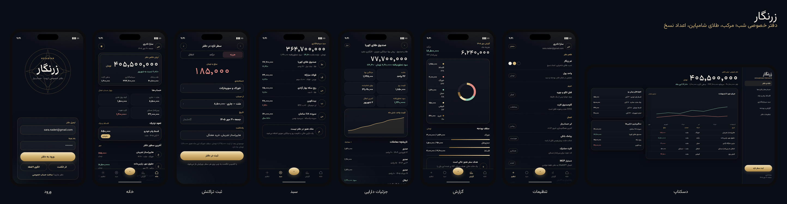
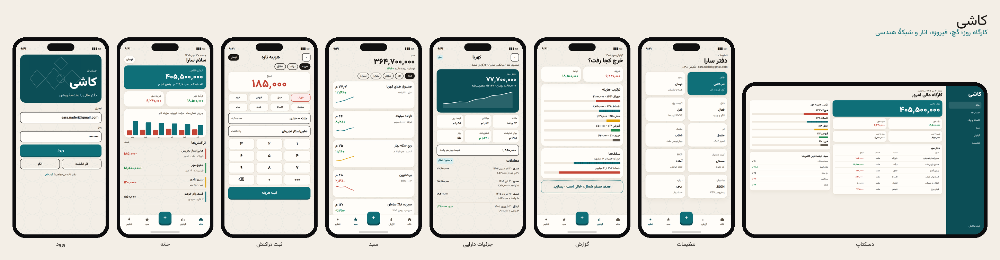
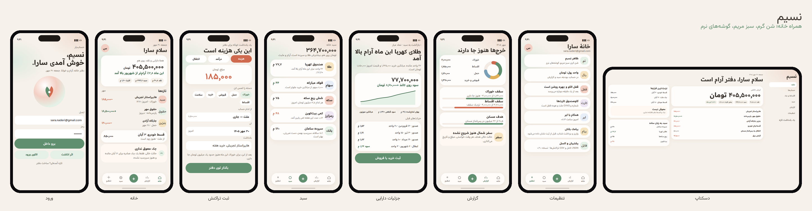
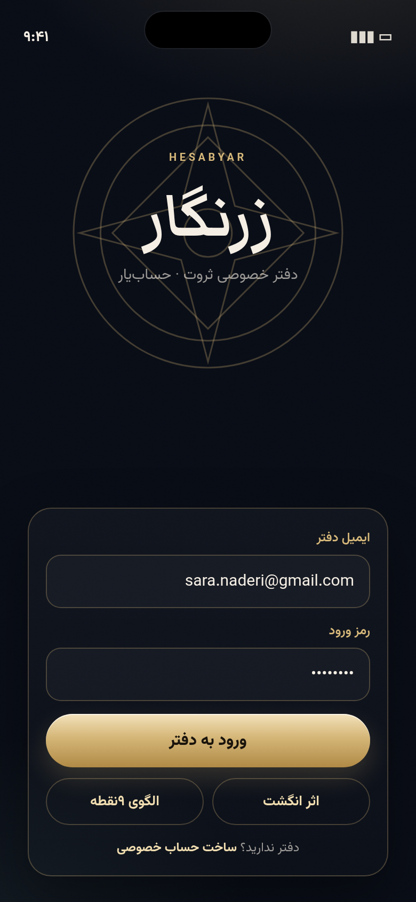
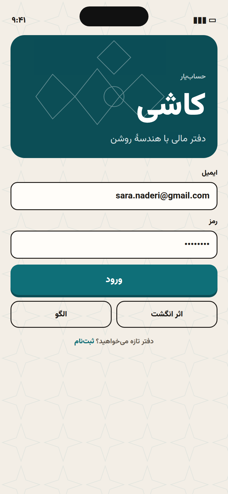
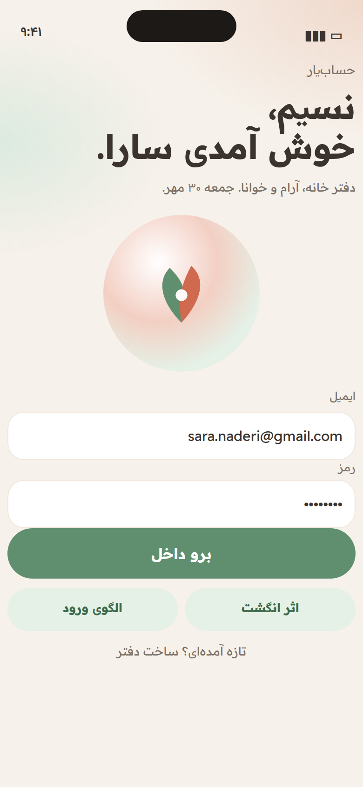
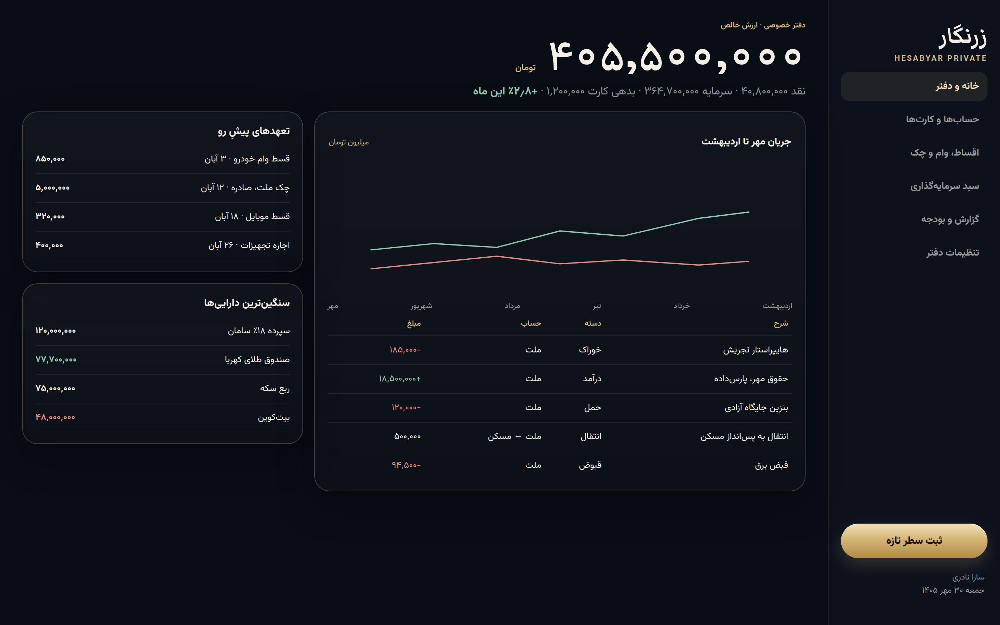
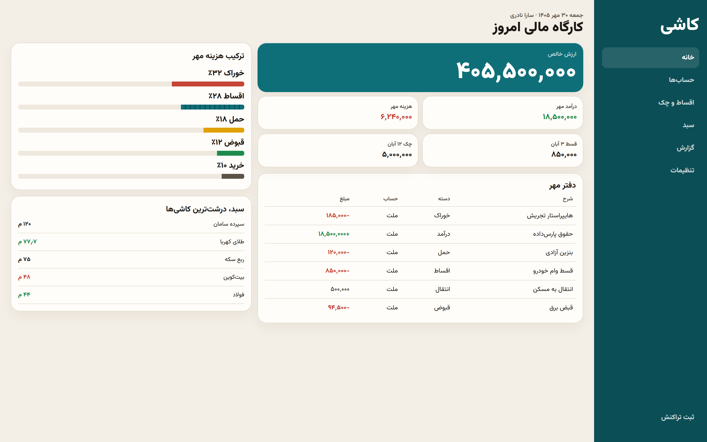
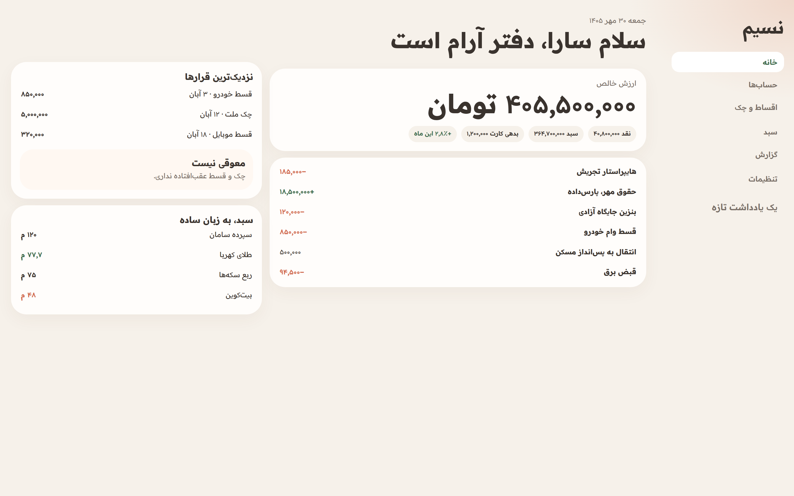

ماکت ثابت برای مقایسه. برنامهٔ اصلی دست نخورده است. هر نمای موبایل ۳۹۰×۸۴۴ است. دادهٔ نمونه: سارا نادری، ۳۰ مهر ۱۴۰۵، تومان.
| زرنگار | کاشی | نسیم | |
|---|---|---|---|
| حس | دفتر خصوصی شب | کارگاه روشن روز | همراه آرام خانه |
| قوت | اعتماد، سبد، اعداد درشت | سرعت، شبکه، خوانایی داده | ثبت روزمره، اضطراب کمتر |
| ریسک | برای خرید روزمره رسمی است | نقش کاشی نباید شلوغ شود | برای سبد سنگین ممکن است سبک باشد |
دفتر خصوصی شب؛ مرکب، طلای شامپاین، اعداد نسخ.

کارگاه روز؛ گچ، فیروزه، انار و شبکهٔ هندسی.

همراه خانه؛ شن گرم، سبز مریم، گوشههای نرم.






